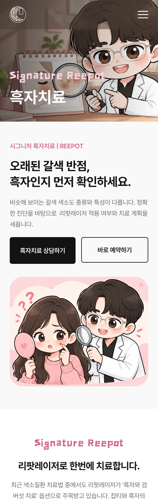

2026.10
맑고고운시그니처 흑자치료
인천 맑고고운시그니처의원 시그니처 시술(리팟 레이저) 서브페이지
- CLIENT
- 맑고고운시그니처의원 (인천)
- PERIOD
- 2026.10 (약 1주)
- ROLE
- 디자인 100% · 퍼블리싱 100% 이미지 기획 100% (기획: 마케팅팀)
- SCOPE
- 흑자치료 서브페이지 · PC / 모바일
- TOOLS
- Figma · HTML · CSS
- WEBSITE
- incheonsignature.com ↗
SUMMARY
어려운 시술 정보를
차근차근 읽히도록
인천 맑고고운시그니처의원의 시그니처 시술인 흑자 치료(리팟 레이저)를 소개하는 서브페이지입니다. 같은 계열의 CnB맑고고운본점과는 컨셉과 디자인 톤을 다르게 잡아 이 병원만의 인상을 새로 만들었습니다.
기획안을 바탕으로 디자인과 퍼블리싱을 맡았고, 페이지에 들어가는 이미지는 모두 직접 기획했습니다. 흑자의 정의 → 진단 포인트 → 장비와 기술 → 진료 과정 → 자주 묻는 질문 순서로 정보가 이어지도록 구성했습니다.
KEY POINTS
같은 계열, 다른 인상
01
새로운 컨셉과 톤
같은 계열 병원이지만 CnB맑고고운본점과 컨셉 · 디자인 톤을 다르게 잡아 지점만의 정체성을 만들었습니다.
02
이미지 직접 기획
페이지에 들어가는 이미지를 모두 직접 기획해, 설명이 많은 시술 정보를 시각적으로 풀었습니다.
03
PC · 모바일 반응형
긴 정보 페이지가 모바일에서도 끊기지 않고 읽히도록 섹션별 배치를 조정했습니다.
SCREENS
PC · 모바일
페이지의 앞부분입니다. 진단 포인트, 장비, 진료 과정, FAQ까지 이어지는 전체 흐름은 실제 페이지에서 볼 수 있습니다.


시술 전후 사진 섹션은 환자 사진이 포함되어 있어 포트폴리오에서는 제외했습니다.